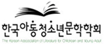
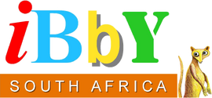
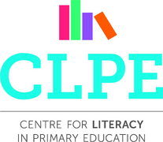
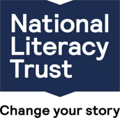
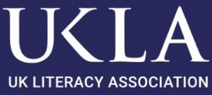
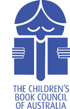
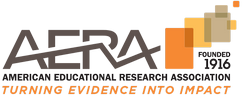
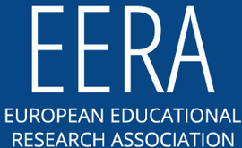
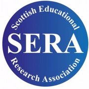
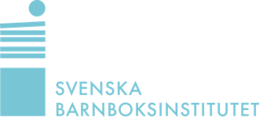

Children’s Literature Assembly (CLA)
US
A professional community within the US National Council of Teachers of English, with resources for teaching literature and a research conference.
Visit Children’s Literature Assembly (CLA)Children’s literature, literacy and childhood

Find organisations for children’s literature, literacy and education.
US
A professional community within the US National Council of Teachers of English, with resources for teaching literature and a research conference.
Visit Children’s Literature Assembly (CLA)US

Scholarly association for the study and teaching of children’s and young adult literature.
Visit Children’s Literature Association (ChLA)ChLA journals: Children’s Literature and Children’s Literature Association Quarterly
Europe
An academic network focused on the study of picturebooks and their forms, histories and readers.
Visit European Network of Picturebook ResearchInternational
International research society with a biennial congress and information for scholars.
IRSCLIRSCL journal: International Research in Children’s Literature
International
A reading group focused on neurodiversity in children’s literature.
International
Research network for young adult literature, media and culture.
YASA eventsAustralia and New Zealand

Research association with conferences, resources and links to specialist collections.
Visit Australasian Children’s Literature Association for Research (ACLAR)Germany
Scholarly society for research on children’s and young adult literature, with publications and events.
Visit German Society for Children’s and Young Adult Literature Research (GKJF)Taiwan
A specialist children’s literature research institute in Taiwan.
Visit Graduate Institute of Children’s Literature, National Taitung UniversityJapan
Specialist research institute with children’s literature resources and a research bulletin.
Visit International Institute for Children’s Literature, OsakaJapan
Japanese scholarly society with information on its activities and publications.
Visit Japan Society for Children’s LiteratureSouth Korea

A South Korean scholarly association for children’s and young adult literature.
Visit 한국아동청소년문학학회International
International network for children’s literature and reading, with national sections, awards and accessible-book catalogues.
IBBY collectionsChina
China’s IBBY section, with reading promotion and children’s literature activities.
Visit Chinese Board on Books for Young People (CBBY)Australia
Australian section of IBBY, linking local children’s literature to international programmes.
Visit IBBY AustraliaCanada
Canadian national section of IBBY, with programmes supporting reading and access to books.
Visit IBBY CanadaMexico

Mexico’s national IBBY section, active in children’s books and reading promotion.
Visit IBBY MexicoNigeria
Nigeria’s national section of the International Board on Books for Young People.
Visit IBBY NigeriaSouth Africa

A national forum for children’s and youth literature, with reviews and events.
Visit IBBY South AfricaUK
The British section of IBBY, with events and activities in children’s literature.
IBBY UKUS
The US national section of IBBY promotes international children’s and young adult literature through booklists, awards and events.
Visit USBBYJapan
Japan’s IBBY section publishes recommendations and promotes Japanese children’s books internationally.
Visit Japanese Board on Books for Young People (JBBY)South Korea

South Korea’s IBBY section, connecting children’s book professionals and promoting Korean children’s literature.
Visit Korean Board on Books for Young People (KBBY)India

The India chapter of IBBY, hosted by the Tata Trusts’ Parag initiative.
Visit Parag · IBBY IndiaPhilippines
The Philippine IBBY section, promoting children’s books and reading.
Visit Philippine Board on Books for Young People (PBBY)United Arab Emirates
An IBBY national section supporting children’s literature and access to books in the UAE.
Visit UAE Board on Books for Young People (UAEBBY)UK
UK book recommendations, reading programmes and resources for families, schools and libraries.
BookTrustScotland, UK
A national charity supporting reading and writing through programmes for children, families and communities.
Visit Scottish Book TrustUK

Booklists, classroom resources and professional development for primary literacy.
CLPEIncludes picturebook teaching materials and research for classroom use.
UK

UK literacy research, classroom resources and reading-for-pleasure programmes.
National Literacy TrustUS
US children’s literacy charity with reading programmes and resources for families and educators.
Reading Is FundamentalUK

A professional association for literacy education, with research, conferences and book awards.
UKLAHong Kong
Hong Kong organisation promoting children’s literature and the arts.
Visit Hong Kong Children’s Arts Society (香港兒童文藝協會)Australia

National organisation promoting Australian children’s literature and running the Book of the Year Awards.
Visit Children’s Book Council of Australia (CBCA)New Zealand

New Zealand charity promoting children’s and young adult literature through awards, events and resources.
Visit Storylines Children’s Literature Charitable TrustCanada
Canadian children’s book reviews, awards and resources for discovering new titles.
Visit The Canadian Children’s Book CentreAfrica
Openly licensed picture storybooks in African languages.
Visit African StorybookGhana

Reading promotion and library support in Ghana.
Visit Ghana Book TrustSouth Africa

South African literacy development and multilingual children’s reading resources.
Visit PRAESAUK
Reviews and critical features on children’s books, including Dr Rebecca Butler’s writing on representation and inclusion.
Explore Books for KeepsScotland, UK
Professor Sarah McGeown leads collaborative research on literacy experiences and outcomes across the lifespan.
Explore the Literacy LabUS

US-based association with international participation in educational research.
Visit American Educational Research Association (AERA)Australia
Australia · Professional association for educational research.
Visit Australian Association for Research in Education (AARE)UK
Professional association for research on language and applied linguistics.
Visit British Association for Applied Linguistics (BAAL)UK
UK association for education research, with special interest groups and an annual conference.
Visit British Educational Research Association (BERA)Canada
Canada · Professional association for educational research.
Visit Canadian Society for the Study of Education (CSSE)China
Mainland China · Professional society supporting educational research and practice.
Visit Chinese Society of Education (CSE)Singapore
Singapore · Professional association for educational research.
Visit Educational Research Association of Singapore (ERAS)Europe

Network of educational research associations across Europe.
Visit European Educational Research Association (EERA)Germany
Germany · Professional association for educational research.
Visit German Educational Research Association (DGfE / GERA)Hong Kong
Hong Kong · Professional association for educational research.
Visit Hong Kong Educational Research Association (HKERA)UK
UK professional association supporting inclusive education and SEND practice.
Visit National Association for Special Educational Needs (nasen)New Zealand
New Zealand · Professional association for educational research.
Visit New Zealand Association for Research in Education (NZARE)Scotland, UK

Scottish network for education research, with research networks and an annual conference.
Visit Scottish Educational Research Association (SERA)South Africa
South Africa · Professional association for educational research.
Visit South African Education Research Association (SAERA)Taiwan
Taiwan · Professional association for educational research.
Visit Taiwan Education Research Association (TERA)Australia
An Australian picturebook illustration initiative founded by Ann James and Ann Haddon. The National Centre for Australian Children’s Literature documents its history.
Books Illustrated backgroundEurope
A European picturebook project associated with Penni Cotton. This archived IBBYLink article describes the collection and its later development.
EPBC background (PDF)Germany
Munich-based international collection of children’s and youth literature, with exhibitions and research resources.
International Youth LibraryUS
Kent State University collection dedicated to picturebook art and scholarship.
Kent State collection informationSweden

A specialist institute supporting and documenting children’s literature research in Sweden.
Visit Swedish Institute for Children’s BooksJapan

Japan’s national specialist library for children’s literature.
Visit International Library of Children’s Literature, National Diet LibraryAustralia
Research collection documenting Australian children’s books and illustration.
Visit National Centre for Australian Children’s LiteratureInternational
International annotated selections including accessible formats and books about disability.
Explore IBBY Collection for Young People with DisabilitiesInternational
International Youth Library recommendations for discovering books across languages and publishing markets.
Explore The White Ravens DatabaseUS
A course provider offering workshops and programmes on writing and illustrating children’s books.
Visit Children’s Book AcademyInternational

International professional organisation for children’s book writers, illustrators and translators. Its network offers events, professional development and opportunities to share work.
Visit SCBWIAustralia

National professional association supporting primary English and literacy education through publications, classroom resources and professional learning.
Visit PETAASingapore

Programmes for writers, illustrators and readers, including the Asian Festival of Children’s Content.
Asian Festival of Children’s ContentInternational
Interviews and galleries showing how illustrators develop picturebooks, from initial sketches to finished spreads.
Explore Picturebook Makers